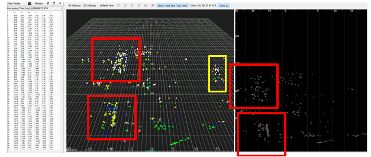
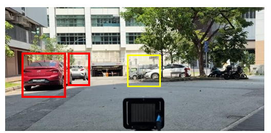
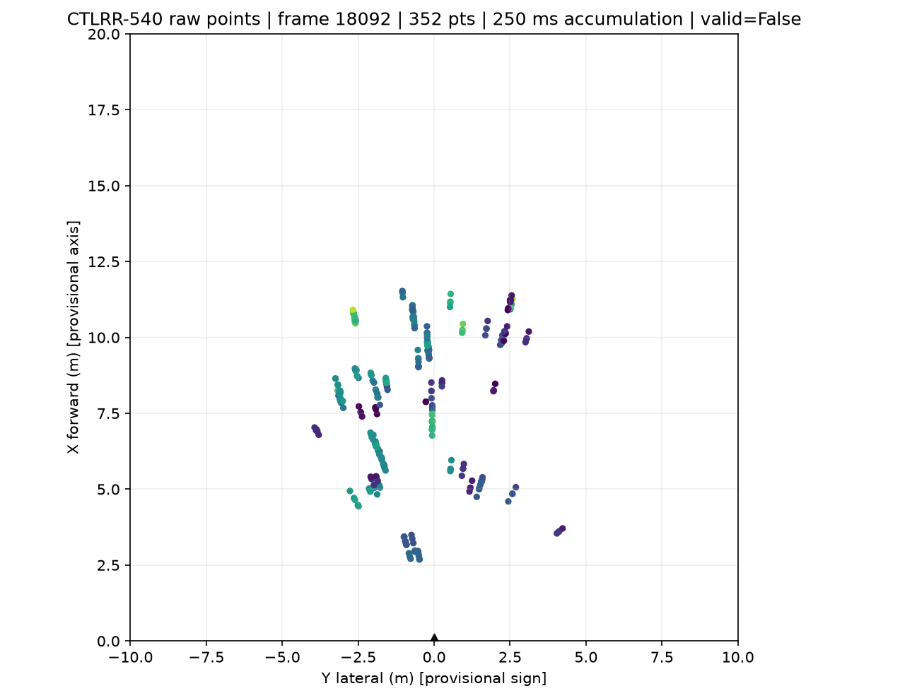
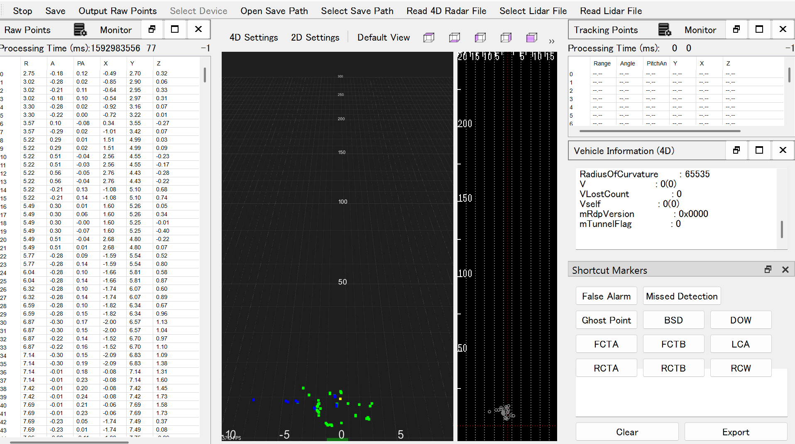
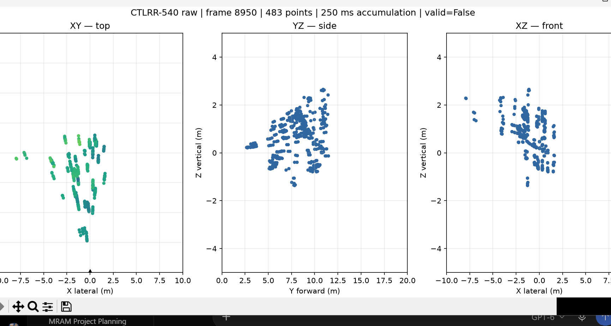

Configurable Maritime Proximity-Sensing and Berthing Assistance System
Table of Contents
1. Problem, Motivation & Context
During berthing and close-quarters navigation, operators must judge clearance from quays, vessels and floating hazards while the hull and onboard structures can limit sight lines and sensor coverage. A fixed radar layout may leave blind zones when vessel geometry or the monitored side changes.
This project develops and evaluates a configurable 4D mmWave sensing aid for those operations. It is associated with ST Engineering's AUTONOMAST product and technology department in ST UIS. The interim system is a research prototype, not a certified warning system or vessel controller.
1.1 Evidence Gap and Project Contribution
The problem statement establishes why close-range awareness matters. This subsection reviews existing solutions and identifies the narrower configuration question this project will address.
Radar-assisted berthing is established: R-BAD reports an onboard multi-radar system and over 69 hours of synchronized radar/video data. Separate 77 GHz research detects small marine targets in dynamic sea scenes using specialized beamforming and clutter processing [3][4]. This project does not claim to be the first radar berthing aid.
Commercial radar berthing aids also exist. Akasaka Tech describes a vessel-side, two-radar system for measuring distance to a quay, while ELVA-1 describes a shore-side docking radar that measures approaching-ship distance and speed [10][11]. These products establish prior art, but use different deployment arrangements from this vessel-mounted configuration study.
The contribution is a vessel-specific method to choose radar count and mounting poses from hull geometry, mounting limits and the monitored zone, then measure coverage and overlap. The Sea Joey is the main case; transfer to the smaller USV will be assessed. Rain affects both LiDAR returns and 77 GHz radar clutter [1][2], so weather performance must be measured.
1.2 Value Proposition
Having identified the gap, this subsection explains the practical value the project aims to provide. It links the research contribution to the intended operational setting.
The value proposition is a repeatable way to configure close-range radar for an individual vessel instead of assuming one layout fits every hull. Given vessel geometry, mounting limits and a monitoring zone, the workflow will propose sensor count and poses and show predicted coverage, blind zones and overlap.
If validated, this guidance could reduce installation trial-and-error and make coverage limitations visible before deployment. The project evaluates a research prototype; safety certification, control functions and AUTONOMAST integration remain future work.
2. Objectives & Scope
Section 1 defines the problem and project contribution. This section turns them into a research question and objectives that guide the requirements, sensor choice and tests.
Research question: How do vessel geometry, mounting and water exposure affect CTLRR-540 obstacle detection and localization?
Semester 1 produced the concept, sourced radar, interface and LiDAR/camera pilot. Semester 2 will integrate and test one or two radars, subject to access.
Project objectives
The research question states the overall problem to investigate. These objectives divide it into concrete sensing, configuration, fusion and timing tasks.
- Characterize sensing: measure detection availability and localization error across range, azimuth, target and controlled water-exposure conditions.
- Make configuration actionable: develop a vessel-frame method that converts a vessel drawing, mounting constraints and monitoring zones into feasible radar count, poses and predicted coverage.
- Evaluate multi-sensor benefit: compare one- and two-radar layouts for uncovered zones, overlap, track duplication, network load and processing delay.
- Use camera evidence appropriately: synchronize video for labeling and evaluate object-level association only after calibration and radar data acquisition are reliable.
- Report operational timing: measure host-side processing and end-to-end display delay, separating these from sensor-internal delay unless the vendor exposes suitable timestamps.
2.1 Target Vessels and Operating Boundary
The objectives need representative platforms and a defined operating envelope. This subsection states which vessel cases and distances the proposed system will address.
Reference geometries are a target USV of approximately 1.75 m LOA (beam and mounting constraints unconfirmed) and ST Engineering's Sea Joey, a 10.5 m Ribcraft 10.5 m PRO with 3.0 m beam [9]. They inform placement studies; neither has validated radar performance.
The design zone is 0.2–10 m, based on the manual's minimum range and roughly one Sea Joey LOA. The 3 m critical threshold is provisional; a safe warning distance depends on vessel response, speed and hazard.
The 30 × 30 × 30 cm box at 3 m is a repeatable baseline, but the current project record does not give a hazard-based reason for selecting that size. It is not a proven minimum detectable object. Ask the project partner to nominate relevant hazards, then measure their dimensions and material and test across size, range, aspect and height above water. Radar detectability also depends on reflection strength and scene clutter, so geometric size alone cannot establish a detection limit.
2.2 Provisional Design Requirements
The vessel cases establish where the system must operate. This subsection turns that context into provisional requirements for the configuration and validation work.
These are design targets, not achieved results. The configuration input is a vessel-specific installation brief; the output is an auditable sensor layout and coverage estimate. Sensor count cannot be set from vessel length alone.
| Requirement | Target or measure | Basis and verification |
|---|---|---|
| Operating zone | 0–10 m design envelope; radar manual lists 0.2 m minimum | Approx. one Sea Joey LOA; measure usable range on representative targets. |
| Angular coverage | Measure blind sectors for each configured pose; one unit has nominal ±60° azimuth | Do not infer 360° from two sensors; compare geometric prediction with measured target detections. |
| Target size | 30 cm box for repeatable pilot; representative buoy size to be selected | Report observed cluster extent separately from measured object dimensions. |
| Configuration output | Feasible sensor count and vessel-frame mounting poses for a specified hull and monitoring zone | Predict coverage from nominal FOV, account for hull/mount occlusion, then validate with measured detection maps. |
| Sensor count | One radar baseline; physical integration target up to two | Verify coverage gaps, duplicate detections, interference risk and packet handling; no 360° guarantee from nominal FOV. |
| Update and latency | Vendor nominal 20 Hz (50 ms frame interval); host pipeline must sustain the incoming rate without growing backlog | Measure update cadence and packet-receipt-to-display delay separately; agree a safety-relevant end-to-end target with ST Engineering. |
Configuration input and output
The design requirements establish expected system behavior. This table makes explicit what vessel information the configuration method needs and what layout it must return.
| Input / output | Required information | How it is used |
|---|---|---|
| Vessel geometry | Hull outline or planform, LOA, beam, deck levels, superstructure and known radar-obstructing structures | Build a vessel coordinate frame and mark geometric shadow regions. |
| Mounting constraints | Permitted mounting surfaces, sensor height range, orientation limits, cable/power access and protected-cover constraints | Remove physically impossible sensor poses from the candidate layout. |
| Monitoring requirement | Zones to cover, operating range, hazard classes and priority areas (e.g. bow, stern or berthing side) | Weight required grid cells; distinguish must-cover areas from optional coverage. |
| Configuration output | Recommended number of radars, each pose (x, y, z, yaw, pitch, roll), coverage map, uncovered cells and overlap map | Give the operator or installer a reviewable layout and show where its limits remain. |
2.3 Evaluation Metrics
The requirements state what the design should do. These measures define how detection, size estimates and distance estimates will be compared with ground truth.
- Object-size estimation accuracy: compare estimated object dimensions with measured physical dimensions. Report mean absolute error; treat this metric as unavailable when the radar pipeline does not produce a size estimate.
- Distance estimation accuracy: compare radar-estimated target distance with surveyed ground truth. Report mean absolute error and signed bias by range and condition.
Size and distance errors are calculated only for correctly associated detections. Report missed detections separately through recall; do not treat a radar cluster's apparent extent as the object's physical size.
3. Sensor Technology Selection
Section 2 defines the operating needs and evaluation measures. This section compares sensing options against those needs before presenting the selected radar.
CTLRR-540 is a candidate for characterization, not a proven optimal maritime sensor.
| Modality | Relevant strength | Limitation for this use | Project role |
|---|---|---|---|
| RGB camera | Low-cost scene context and visual labels | No direct metric range; visibility and illumination affect imagery [3] | Reference video and operator context. |
| LiDAR | Dense 3D geometry and direct ranging | Rain can reduce return intensity and point counts [1]; water exposure needs controlled testing | Available reference sensor; not assumed to be perfect ground truth. |
| Thermal camera | Operates without visible illumination | Thermal contrast does not guarantee precise close-range geometry | Considered, not selected for this prototype. |
| Conventional marine radar | Established vessel-scale navigation and weather operation | Long-range navigation radar may lack close-range obstacle resolution for berthing [3] | Contextual alternative; a matched product trade study remains future work. |
| Automotive 4D mmWave | Compact point/track output with range, angles and radial velocity | Sparse detections, sea/rain clutter, limited FOV and unverified maritime mounting | Characterize CTLRR-540; compare performance rather than assume robustness. |
CTLRR-540 is a pragmatic prototype choice: its packaged 3D point/track output supports placement and integration studies. Maritime research shows promise and sea-clutter challenges for 77 GHz radar [4]. This is not a claim that CTLRR-540 is optimal; the project contribution is vessel-specific configuration.
The trade study compares range, angular coverage, output type, environmental sensitivity, mounting burden and integration access. Camera and LiDAR serve as context and comparison modalities; thermal imaging and conventional marine radar are considered but not integrated into this prototype. A numerical weighted score is deferred because equivalent maritime performance and lifecycle-cost data are unavailable for the candidate products.
3.1 Selected Radar: CTLRR-540 4D Imaging Radar
The trade study selects the RUDA CTLRR-540 as the radar candidate for prototype characterization. The table separates manufacturer specifications from performance still to be demonstrated.
| Parameter | CTLRR-540 documentation | Project implication |
|---|---|---|
| Radar configuration | 6 transmit, 8 receive channels (6T8R) [5] | Vendor configuration; internal antenna and RF cascade layout are not documented in the supplied manual. |
| Operating band | 76–79 GHz [5] | Supports the selected 77 GHz mmWave investigation. |
| Range | Listed as 0.2–360 m [5] | Maximum range does not prove reliable detection of small targets at close berthing distances. |
| Range performance | 0.15 m resolution; ±0.1 m accuracy [5] | Manufacturer ratings; verify against surveyed targets and test conditions. |
| Angular coverage | ±60° azimuth; ±15° pitch [5] | Use as nominal coverage inputs; measure installed coverage and blind regions. |
| Output | Up to 2,048 points/frame at 20 Hz [5] | Live acquisition currently decodes vendor detection points; point count and cadence remain test conditions to characterize. |
| Power and enclosure | 12 V, ≤10 W; IP6K7/IP6K9K [5] | Check power and mounting requirements; enclosure rating alone does not establish performance through spray or sea clutter. |
| Host interfaces | 100 Mbps Ethernet and CAN; differential Ethernet pins ETH_M/ETH_P [5] | Current receiver uses Ethernet; confirm PHY compatibility, packet fields, units, axes and timestamps. |
Processing hardware and data access
- The RUDA manual identifies an AWR2243P RF front end and AM2732 processor in the packaged CTLRR-540 [5].
- TI lists AWR2243 as a 76–81 GHz FMCW transceiver and AM2732 as a radar processor platform [6][7].
- AWR2243BOOST is a separate TI evaluation module [8]; the RUDA manual does not say that it is included in the CTLRR-540.
- The available documentation does not establish the radar’s internal RF cascade, raw ADC/IQ access or calibrated received-power output.
The project chose the CTLRR-540 because it is a sourced, packaged 4D radar that has already been brought up and provides vendor detection points over Ethernet for the planned vessel-configuration study. Its stated field of view, range and environmental ratings make it a practical candidate to test, while its 12 V, ≤10 W rating supports prototype power planning.
This is a feasibility choice, not evidence that the radar is optimal or suitable for every marine condition. The project will judge suitability from measured close-range detection, distance and size-estimation results.
Because the current stream contains processed detections rather than confirmed raw ADC/IQ or calibrated received power, water tests can assess detection changes but cannot yet be called an RF attenuation study. Confirm accessible signal fields, firmware controls and timestamp behavior with RUDA before making that claim.
4. System Concept & Methodology
Sections 2 and 3 define the requirements and selected sensor. This section explains how the radar, host software, vessel configuration and display fit into one proposed system.
The proposed chain is radar Ethernet acquisition → packet/frame decoding → coordinate transformation → point clustering and temporal association → vessel-centric display/logging. Single-radar UDP reception, vendor-frame parsing, point decoding, XYZ reconstruction, a three-view diagnostic display and CSV logging are now implemented. Multi-radar processing, online clustering, camera fusion, vessel-centric UI integration and Jetson deployment remain planned. The first radar result is preliminary and does not establish validated maritime performance.
4.1 Detection and Object Characterization Pipeline
Section 4 introduces the system as a whole. This subsection describes the implemented single-radar stage: receiving vendor detection messages, decoding point fields and reconstructing XYZ coordinates.
0x11 RAW_TARGET_DATA contains post-DSP detection points, not raw ADC/IQ samples.
The live visualizer currently decodes this point stream; it does not decode 0x21 TRACK_TARGET_DATA, run vendor tracking or perform DBSCAN.
The visualizer uses 72-byte point records and reconstructs XYZ from range, azimuth and elevation. The angles are interpreted as radians, with X lateral, Y forward and Z vertical; verify this mapping against surveyed targets before treating the display as calibrated physical coordinates.
Compare basic clustering with DBSCAN, then test temporal association and radial velocity. Report position and cluster extent; do not treat sparse extent as physical size. Warning zones remain configurable research logic, not operational safety thresholds.
4.2 Configurable Multi-Sensor Architecture
Section 4.1 explains how one radar stream is processed. This subsection extends that pipeline across vessel-specific sensor poses and addresses coverage, overlap and blind zones.
Record each hull planform, dimensions, mounting limits and monitored zone. Use nominal field of view and hull occlusion to propose sensor count and poses, then validate with a surveyed target coverage grid. Compare one- and two-radar layouts for blind sectors, overlap, packet load and interference; two ±60° sensors do not guarantee 360° coverage.
Vessel configuration method
The architecture defines the configuration problem. This method sets out how vessel geometry and monitoring priorities produce candidate sensor counts and poses.
- Define the vessel frame. Set the origin and axes (longitudinal, transverse and vertical) and enter the hull outline, deck levels and fixed structures. Record candidate mount locations in this frame.
- Describe the task zone. Draw polygons for the areas to monitor and assign each a priority, required range and hazard class. Separate required coverage from areas where gaps are acceptable.
- Generate feasible poses. Enumerate sensor positions allowed by mounting, power, cable and protection constraints. For each, test yaw and pitch orientations against nominal radar field of view and manual mounting guidance.
- Estimate geometric coverage. Sample the task zone on a fixed grid. Mark cells inside a sensor's range and angular limits, then remove cells blocked by the hull or structures. Label this a geometric estimate, not a detection guarantee.
- Select sensor count and placement. First test whether one sensor covers all must-cover cells. If not, evaluate two-sensor combinations and report each layout's uncovered priority area, single-sensor redundancy, overlap area and mounting feasibility. The project can compare candidate layouts; a final layout requires partner-approved coverage and mounting requirements.
- Validate in the field. Move a surveyed target through selected grid cells, including predicted boundaries and overlap regions. Compare observed detection availability and localization error with the geometric prediction, then update the coverage map.
Layout decision: enumerate physically feasible one-radar poses first, then feasible two-radar combinations if one unit cannot meet the must-cover constraint. Select the smallest sensor count that meets the agreed weighted-coverage requirement; among layouts with that count, compare blind-zone weight, overlap, installation burden and network/processing limits. If no layout meets the requirement within the two-radar limit, report the shortfall and identify which zone would remain uncovered rather than recommending an infeasible arrangement.
Initial vessel cases and remaining inputs
The method requires real installation data to produce a vessel-specific answer. This subsection applies it to the known vessel dimensions and identifies the missing inputs.
The Sea Joey provides a known reference envelope of 10.5 m LOA by 3.0 m beam. These dimensions support a preliminary planform model, but they are insufficient to recommend an exact sensor count or mounting position.
The vessel drawing, usable mounting locations, mounting heights, structures that obstruct the beam, intended berthing side and priority coverage zones are still required from ST Engineering. The smaller USV's beam and mounting constraints are also unconfirmed.
Until these inputs are received, the report presents a configuration method and a testable workflow, not a completed vessel installation prescription. Once supplied, each case should include a scaled plan view, candidate poses, predicted blind/overlap zones and the reason for selecting the final count.
Calibrate each node's six-degree-of-freedom vessel-frame pose and transform detections before associating tracks.
The manual recommends a 300–700 mm installation height (320–360 mm preferred), near-zero yaw/roll, a 90° pitch reference and a uniform non-metallic cover clear of conductive material in the field of view. These automotive-context recommendations are starting constraints; marine radome, hull and spray effects require assessment [5].
Camera use is staged: first synchronize and record video as an observation reference for labeling target visibility and checking radar associations. If schedule permits, implement object-level fusion by associating radar tracks with camera image regions using calibrated time and sensor geometry. Radar contributes range and radial motion; the camera contributes visual context. No pixel-level or safety-critical fusion claim is made.
Camera association plan
Radar remains the primary ranging sensor in this design. This subsection explains how synchronized camera evidence may add visual context to radar tracks.
- Calibrate camera intrinsics and determine the camera pose relative to the vessel frame. Record the radar-camera time offset and drift.
- Transform radar detections into the camera frame and project their bearings into the image using the calibrated camera model.
- Associate a radar track with a candidate image region only when time, bearing and range-consistent geometry fall within predeclared gates. Preserve the radar-only track when no visual match exists.
- Evaluate association precision and missed associations against manually reviewed synchronized video. Report radar-only and fused results separately.
For the interim prototype, synchronized video is the highest-priority camera use because it improves labeling and provides a visual record of scene conditions. Automated fusion is a later module gated on stable radar decoding and calibration. The camera is not treated as an all-weather fallback, and fusion must not hide a radar detection when visual evidence is absent.
4.3 Communications Architecture
The processing and placement sections define what data the system uses. This subsection describes the implemented single-radar UDP receiver and the network work remaining for the full system.
The live Python receiver subscribes to UDP multicast group 224.0.2.6 on destination port 51277. It binds the UDP socket to 0.0.0.0:51277, then joins the multicast group through the selected host network interface.
The wildcard bind accepts traffic addressed to the host on that port; it does not select the network adapter. The selected interface determines which network receives the multicast subscription.
Single-radar reception has been demonstrated on the Windows development PC through the compatible automotive-Ethernet interface. A shared-switch, two-radar path and Jetson deployment remain proposed and require validation.
4.4 Power Architecture
The communications design requires a compatible powered sensor and host. This subsection records the bench power and wet-test constraints before any vessel installation is attempted.
The proposed bench arrangement uses a portable AC source with separate regulated supplies for the radar, communications hardware and compute platform. Each radar supply must meet the CTLRR-540 input requirements, while converter, switch and Jetson supplies must match their specific hardware.
The diagram is a planning architecture, not a verified assembled power system. Confirm the proposed supply ratings, adapter outputs, protection, wiring and connector limits before implementation.
Keep power equipment separated from the wet-test area. A custom vessel power-distribution PCB remains a possible later integration item.
4.5 Visualisation Prototype
Sections 4.1–4.4 define sensing, placement, data transfer and power. This subsection shows how their intended output is presented to an operator, while distinguishing the prototype from a live integrated system.
The 3D v07 simulation is the current interface prototype. It demonstrates vessel-centric layout, configurable sensor poses and coverage display, obstacle markers and warning-zone concepts using synthetic inputs. It does not consume radar packets, estimate real obstacle size, or control vessel speed. User-interface feasibility is demonstrated; sensing and warning performance are not.
5. Prototype Fabrication, Tests and Initial Outcomes
Section 4 presents the proposed system; this section records what has actually been built and tested so far. It separates current evidence from the radar validation still required.
The interim progress includes requirements definition, concept design, interface prototyping, a comparative test setup and initial CTLRR-540 bring-up. The first radar result has been obtained, while repeatability and performance across targets and conditions remain to be established.
Work to date includes a synthetic interface, a LiDAR/camera spray pilot and initial radar performance testing. The radar it to be integrated into the full vessel-centric processing workflow.
5.1 Prototype Fabrication and LiDAR/Camera Pilot
The CTLRR-540 has now been brought up and an initial radar result obtained. This subsection documents the earlier LiDAR/camera setup and pilot, which informed the controlled radar tests that follow.
5.1.1 Prototype Artifacts
The design concept in Section 4 has produced a software interface prototype and an assembled sensor-test setup. This subsection identifies what was built, what each artifact demonstrates and what remains unbuilt.
| Prototype | Build and purpose | Test evidence | Current limit |
|---|---|---|---|
| Vessel-centric interface | Browser-based 3D simulation with configurable sensor poses, coverage display, obstacle markers and warning-zone concepts. | Exercised with synthetic vessel and obstacle inputs; demonstrates the planned operator view and configuration interaction. | Does not receive radar packets, estimate physical object size or validate sensing performance. |
| Comparative sensor setup | Tripod-mounted LiDAR and camera, cardboard target and manually operated water spray assembled to explore visibility under water exposure. | Six short recordings: four LiDAR and two camera, across dry, direct-wetting and water-across-line-of-sight conditions. | Conditions were unbalanced, spray was unmeasured and the target/sensor geometry was not calibrated. |
| Selected radar hardware | RUDA CTLRR-540 brought up as the candidate sensing unit. | Initial radar performance result obtained; conditions and measurements are summarized in Section 5.4. | Repeatability and performance across range, angle, targets and water exposure remain unverified. |
A custom radar mount, vessel wiring, multi-radar installation and integration into the vessel-centric processing pipeline have not yet been demonstrated. These remain planned project deliverables.
A stationary 30 cm box was placed about 3 m from the sensors. Water was applied directly to a sensor or across its line of sight using a manually operated spray bottle; trials lasted a few seconds. Six runs were recorded: four LiDAR and two camera. Conditions were not balanced across sensors, water delivery was not measured, and precise camera/LiDAR synchronization and trial timing are unavailable. Treat this as setup and failure-mode exploration, not a comparative performance experiment. The future CTLRR-540 study will be described as detection performance under controlled water exposure (availability, range error, cluster quality and false detections). Call it RF attenuation only if calibrated received-power/raw radar data and controlled path conditions are available.
| Sensor | Dry | Direct wetting | Water across LOS | Total |
|---|---|---|---|---|
| LiDAR | 1 | 1 | 2 | 4 |
| Camera | 0 | 1 | 1 | 2 |
5.1.2 Experiment Videos
The pilot table and Figure 6 summarize the setup. These videos provide the corresponding visual record for the six recorded runs.
5.2 Initial Outcomes and Analysis
The videos document the LiDAR/camera pilot, while Section 5.4 records the initial CTLRR-540 result. This subsection reports the pilot observations and distinguishes them from the radar evidence.
One LiDAR water-across-LOS clip showed fewer, missing or displaced box returns; camera clips showed reduced target visibility. The six unbalanced runs are qualitative and establish neither effect size nor sensor ranking.
For future trials, freeze filters and clustering settings, associate detections to surveyed truth, and report availability, loss/reacquisition, position error and false clusters. Show every run; the current pilot is too small for statistical inference.
| Evidence source | Interim outcome | What it supports | What it does not yet show |
|---|---|---|---|
| 3D interface prototype | Vessel-relative sensor poses, nominal coverage and obstacle/warning concepts can be represented interactively. | Feasibility of the planned operator-facing configuration and visualization workflow. | Live sensing, actual detection performance, accurate object size or validated warnings. |
| LiDAR/camera pilot | Six videos were collected; some water-exposure clips show reduced or displaced target returns/visibility. | The physical setup can collect relevant comparison footage and reveal practical test variables. | Statistical effects, a sensor ranking or CTLRR-540 performance. |
| CTLRR-540 bring-up | The radar has been brought up and an initial performance result obtained. | Direct evidence is now available from the selected sensor, beyond specification review. | One initial result does not establish repeatability or performance in maritime operating conditions. |
Together, the interface, pilot setup and first radar result provide an early foundation for configuration and validation work. The radar result adds direct evidence from the selected sensor, but repeatability and performance across conditions remain unverified. The next gate is to document the first run's target, geometry, output and measurement, then repeat it before expanding the range and coverage tests.
5.3 Supporting Software Development
The radar has produced an initial result but is not yet integrated into the full vessel-centric processing workflow. This subsection identifies the software work needed to turn radar packets into repeatable analysis.
A Linux/ROS 2 interface will accept live or replayed frames. Validate packet logging and decoding first; synthetic data test software only.
5.4 Radar Performance Progress
Single-radar bring-up has progressed to live UDP reception, vendor-frame reconstruction, detection-point decoding, three-view display and CSV logging. This is the first implemented path from the CTLRR-540 stream to a visible and recorded result.
| Function | Current implementation | Evidence and limitation |
|---|---|---|
| Live acquisition | Python receiver binds UDP port 51277 and joins group 224.0.2.6 through the configured network interface. | One-radar data are received; two-radar acquisition and integrated vessel processing remain future work. |
| Frame assembly | Processes 0x10 frame headers, 0x11 point packets and 0x1F frame tails; checks declared point and packet counts. | Some frames have matching counts but mismatched header/tail frame IDs. They are flagged provisional (frame_valid=0); tail-ID semantics require vendor confirmation. |
| Point decoding and coordinates | Reads 72-byte records and reconstructs XYZ from range, azimuth and elevation, interpreting angles as radians. | Coordinate axes and scale still require comparison with surveyed targets before reporting localization accuracy. |
| Live visualization and logging | Displays XY, YZ and XZ views with 250 ms accumulation and writes decoded detections to CSV. | Provides diagnostic evidence of a live stream; it is not an object tracker or a vessel-centric warning display. |
| Object processing | Not implemented in the live visualizer. | No DBSCAN, persistent tracking, or object-size and distance estimation is currently integrated. |
Vendor SDK field benchmark
The vendor SDK was benchmarked outdoors outside E8 Lab at NUS on 12 November 2026. The radar display and scene photograph provide qualitative context for the SDK point cloud.
The red and yellow boxes in both images are hand-drawn annotations. They were not generated by the radar algorithm or vendor SDK.


This benchmark documents the SDK display in an outdoor scene. The annotations are for visual reference only and do not establish automated detection, object association or measured accuracy.
Live visualizer and vendor SDK comparison
The custom viewer displays decoded radar detections in XY, YZ and XZ projections and logs the reconstructed points. The vendor SDK capture provides a point table and a 3D scene view.



| Aspect | Custom live visualizer | Vendor SDK capture |
|---|---|---|
| Point display | Decoded points shown in XY, YZ and XZ projections with 250 ms accumulation. | Raw-point table and 3D scene view are visible. |
| Logging and frame status | Decoded XYZ points are logged; the two shown frames are marked valid=False and remain provisional. | The screenshot does not show a matching frame ID or synchronized capture for direct comparison. |
| Object-level processing | No DBSCAN, tracking or object-size/distance estimates are implemented in the live visualizer. | The tracking-points pane is empty in the supplied capture; it does not demonstrate tracking output. |
These screenshots demonstrate live decoding and visualization progress, not detection accuracy or equivalence with the vendor SDK. The captures are not a synchronized, same-frame comparison, and both custom-viewer frames are flagged provisional because frame-ID validation remains unresolved.
The current performance progress is therefore successful acquisition and visualization of vendor detection points, with frame-identity validation still open. Vendor point records are post-DSP detections, not raw ADC/IQ samples.
The viewer and CSV do not by themselves establish detection accuracy, physical object size or distance accuracy. Those measures require a known target, surveyed target-to-radar distance and aspect, repeat runs, and explicit handling of provisional frames.
Section 6.1 now starts by repeating the initial test under documented conditions, then expands to range, angle, water exposure and target-size tests.
6. Validation Protocol and Known Shortcomings
Section 5 distinguishes preliminary observations from established results. This section defines the tests needed to close the evidence gaps and the criteria for judging completion.
Key gaps are limited radar repeats, unbalanced LiDAR/camera trials, unmeasured spray, weak time alignment, and no agreed hazard size or warning distance. The initial radar result is progress, but radar repeatability, comparative accuracy, minimum size and safe thresholds remain unproven.
6.1 Planned Test Matrix
The objectives in Section 2 and unresolved findings in Section 5 require controlled and repeatable evidence. This matrix maps each experiment to its conditions, measurements and decision gate.
| Stage | Conditions and specimens | Protocol / output | Decision gate |
|---|---|---|---|
| 1. Initial-result repeatability | Repeat the first CTLRR-540 target/setup, documenting target, geometry, pose, settings and output type | Repeat the same measurement under unchanged conditions; retain network packets and decoded outputs, then compare the observed result across runs | If the first setup cannot be reconstructed, establish a surveyed baseline and identify it as a new test. Do not infer repeatability from one run. |
| 2. Range/angle baseline | Box at 1, 3, 5 and 10 m; azimuth 0° and ±30°; five repeats per cell | Survey target pose; use fixed radar settings; record point and track streams plus synchronized video | Report detection and localization by cell; revise range claims if results do not support 10 m. |
| 3. Water interference | Dry, water across LOS, direct sensor-window wetting; five repeats per condition | Fix target at 3 m; measure applied water volume/rate and duration; randomize condition order where practical; log radar/LiDAR/video concurrently | Only claim condition effects if capture timing and water exposure are documented. |
| 4. Two-radar integration | Single-node baseline vs two nodes at calibrated poses; overlap and blind-sector targets | Repeat matched target placements; log each node independently and in fused vessel frame | Compare coverage, duplicates, packet loss and processing latency; do not infer 360° from FOV geometry alone. |
| 5. Target-size boundary | Partner-selected hazards with measured dimensions/material; include 30 cm box as baseline; test range and aspect | Hold mounting and radar settings fixed; record repeated detections, dropouts, cluster extent and surveyed target pose for each size/condition | State the smallest tested target meeting the agreed detection repeatability criterion and the conditions where it passed. |
| 6. End-to-end latency | One radar, then two; static and moving target if safe and feasible | Timestamp packet receipt, decode, processing, association and display; record frame gaps, backlog and CPU/network load | Report stage and end-to-end distributions; separate host pipeline delay from unmeasured sensor-internal delay. |
| 7. Vessel configuration | Sea Joey first, smaller USV if geometry and mounts become available | Generate candidate layouts from vessel drawing and task zones; survey target positions through required coverage cells | Report recommended count and poses only after partner acceptance of zone, mounting feasibility and coverage criterion. |
Five repeats are a screening minimum, not proof of statistical power. After the box baseline, test partner-selected, measured hazards across relevant range and angle cells. Freeze parameters, preserve logs, disclose exclusions and compare estimates with surveyed truth.
Water-exposure measurement and terminology
The water test in the matrix can represent different physical effects. This subsection separates those effects so that the resulting measurements are interpreted correctly.
Separate three possible effects in the protocol: water in the propagation path, water on the radar cover, and water-related clutter or multipath in the scene. Do not combine them as one “rain” condition.
For each run, record target type and pose, radar-target distance, spray source and location, application duration and measured volume or flow, sensor-cover state, background condition and synchronized video. Include a dry baseline before and after wet runs to identify drift.
With post-DSP point/track output, the measurable outcome is detection degradation under a defined exposure: availability, range/bearing error, track continuity and unmatched returns. A true attenuation estimate requires calibrated signal level or raw radar data, controlled path conditions and a known reference target; request those capabilities from RUDA before making that claim.
Latency: timestamp packet receipt, completed decode, coordinate conversion, clustering/tracking, optional camera association and UI update with a monotonic host clock. Report each stage and host pipeline delay from packet receipt to display (median, 95th percentile, maximum), along with frame cadence, backlog and packet loss for one and two radars. Call this sensor-to-screen latency only if vendor timestamp semantics and clock synchronization are verified; otherwise sensor-internal processing time is unknown. The 50 ms vendor frame interval describes nominal output cadence, not latency or a proven safety budget.
6.2 Risk Controls and Completion Evidence
Section 6.1 defines the planned tests. This section pairs likely constraints with fallback actions and the evidence needed to support the final claims.
| Risk or dependency | Action if constrained | Evidence to report |
|---|---|---|
| Decoder, packet access or vendor support is delayed | Preserve the completed bring-up as preliminary evidence; request packet and configuration details from RUDA. Use replay to test software, not as live-sensor validation. | Repeatable packet log and decoder; confirmed message types, units, coordinate convention and cadence. Disclose unresolved fields and limit performance claims accordingly. |
| Camera and radar timing is uncertain | Record monotonic host packet timestamps and video timestamps; measure offset and drift before using camera data for quantitative association. | Report synchronization quality. Include fusion results only if calibration and timing checks pass; otherwise use video as qualitative context and defer automated fusion. |
| Water exposure or spray is not repeatable | Fix target and range, measure water volume or flow and duration, repeat conditions, and randomize their order where practical. Describe the test as spray or wetting, not wave simulation. | Document exposure and dry baselines; report detection availability, errors, track continuity and unmatched returns. Do not claim RF attenuation without calibrated signal or raw-data evidence. |
| Vessel or sea-trial access is unavailable | Prioritize controlled bench and range tests; keep Sea Joey trials conditional on access. Use the smaller USV only if its geometry and mounting data are available. | Provide a partner-reviewed vessel layout with mounting constraints, monitored zone, sensor count and poses, coverage map and field comparison. Without vessel data, label the result a parametric method demonstration. |
| Target size or warning thresholds remain undefined | Agree target classes and warning logic with ST Engineering before final evaluation. Keep cluster extent separate from physical dimensions and safe operating limits. | Report repeatable detection results by measured target, range, aspect and exposure; retain misses and state the smallest target that met the agreed criterion. |
| Dual-radar integration or latency testing is incomplete | Report the validated single-radar baseline and identify dual-radar work as incomplete. | For available configurations, report packet-to-display latency distributions, cadence, backlog and packet loss. State that sensor-internal delay is unknown unless independently verified. |
| Reproduction of results | Keep test settings and exclusions with each run. | Archive configuration files, radar logs, target survey, conditions, processing parameters and exclusions so the analysis can be repeated. |
7. Project Plan and Milestones
Section 6 defines the required evidence and dependencies. This Semester 2 timeline sequences radar characterization, multi-radar integration, system validation and final documentation.
Semester 1 focused on project framing, radar sourcing and bring-up with an initial result, 3D interface prototype and six LiDAR/camera pilot runs. Remaining work turns the focus to radar performance evaluation, full software integration and vessel constraints as listed below.
- Mid November–Mid December 2026 — multi-sensor architecture review: Investigate the network setup and prepare the architecture for multi-sensor operation.
- Mid November–Late December 2026 — radar characterization and validation: Quantify target detectability, angular and range separation, clutter and environmental performance. Implement clustering using decoded radar data. Decide by mid-December whether the current mmWave technology can meet the target requirements.
- Early January–Early February 2027 — multi-radar integration: Connect two CTLRR-540 radars to the Jetson and synchronize detections in a common vessel frame. Connect live radar detections to the operator interface, then evaluate mounting configurations and coverage overlap.
- Early February–Mid March 2027 — system validation and deployment guidelines: Validate the integrated system and conduct a sea trial if access and conditions permit.
- End March–Mid April 2027 — documentation: Complete the report and prepare the final presentation.
8. References
The numbered references support the prior-work review, sensor specifications and vessel information used throughout the report.
- [1] Filgueira, A., González-Jorge, H., Lagüela, S., Díaz-Vilariño, L., & Arias, P. (2017). Quantifying the influence of rain in LiDAR performance. Measurement, 95, 143–148. https://doi.org/10.1016/j.measurement.2016.10.009.
- [2] Gourova, R., Krasnov, O., & Yarovoy, A. (2017). Analysis of rain clutter detections in commercial 77 GHz automotive radar. In 2017 European Radar Conference (EURAD). https://doi.org/10.23919/EURAD.2017.8249138.
- [3] Papadopoulos, F. G., Michalopoulos, A.-P., Paliodimos, E. N., Christopoulos, I. K., Patrikakis, C. Z., Simopoulos, A., & Mytilinaios, S. A. (2025). A comprehensive radar-based berthing-aid dataset (R-BAD) and onboard system for safe vessel docking. Electronics, 14(20), 4065. https://doi.org/10.3390/electronics14204065.
- [4] Pirkani, A., Stove, A., Kumar, D., Cherniakov, M., & Gashinova, M. (2024). 77 GHz FMCW imaging radar for low observable and small marine target detection in dynamic sea conditions based on combined MIMO and DBS. IEEE Transactions on Radar Systems, 2, 517–534. https://doi.org/10.1109/TRS.2024.3400694.
- [5] RUDA Technology. (n.d.). CTLRR-540 (6T8R) 4D imaging radar: Product manual. Manufacturer manual supplied for this project. See the RUDA support/downloads page.
- [6] Texas Instruments. (2024). AWR2243 single-chip 76- to 81-GHz FMCW transceiver datasheet (Rev. D). https://www.ti.com/lit/ds/symlink/awr2243.pdf.
- [7] Texas Instruments. (n.d.). AM2732 dual-core Arm Cortex-R5F based MCU with C66x DSP. https://www.ti.com/product/AM2732.
- [8] Texas Instruments. (n.d.). AWR2243BOOST evaluation board. https://www.ti.com/tool/AWR2243BOOST.
- [9] ST Engineering. (n.d.). Sea Joey / Ribcraft 10.5 m PRO sea acceptance trial report. Manufacturer report supplied for this project.
- [10] Akasaka Tech. (n.d.). Millimetre-wave radar workboat berthing management system. https://www.akasakatec.com/products/software/mm_berthing_support/.
- [11] ELVA-1. (2020, February 6). DR-76 76 GHz docking-aid radar. https://elva-1.com/news_events/a40165.